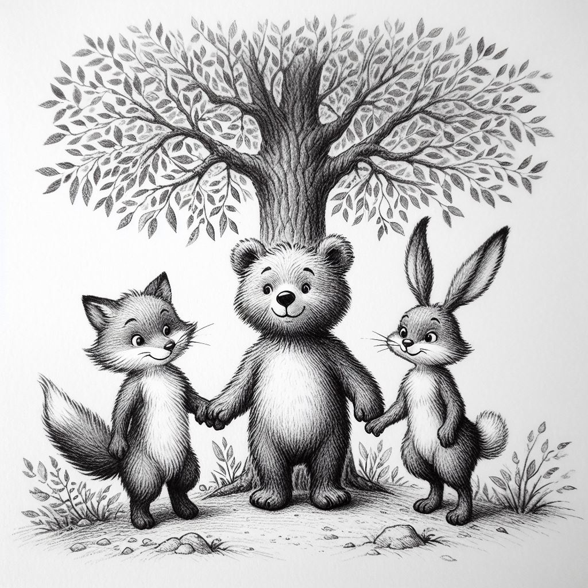
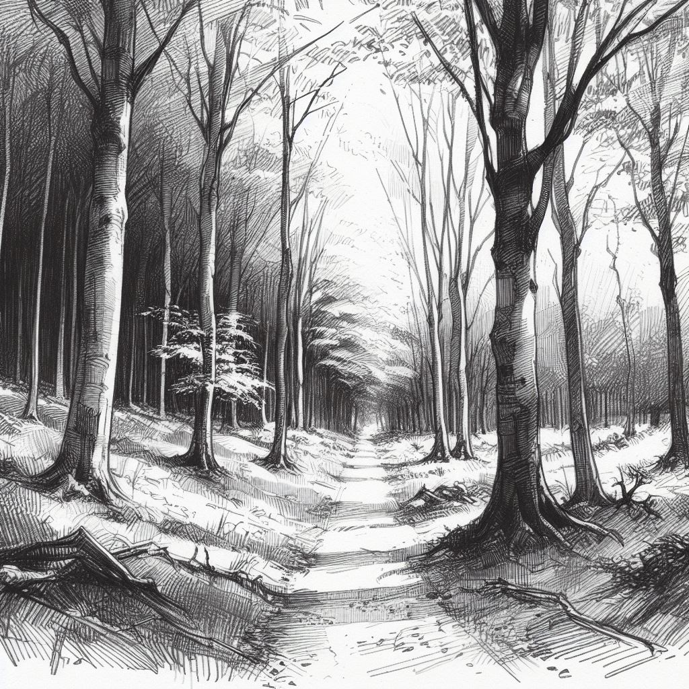
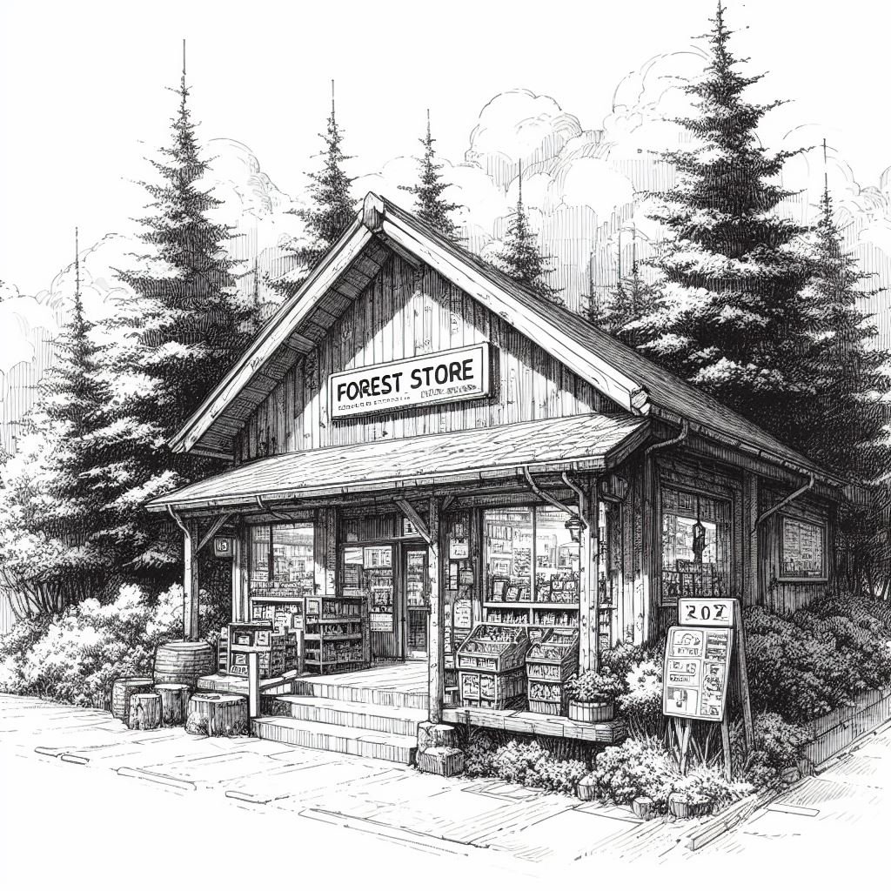
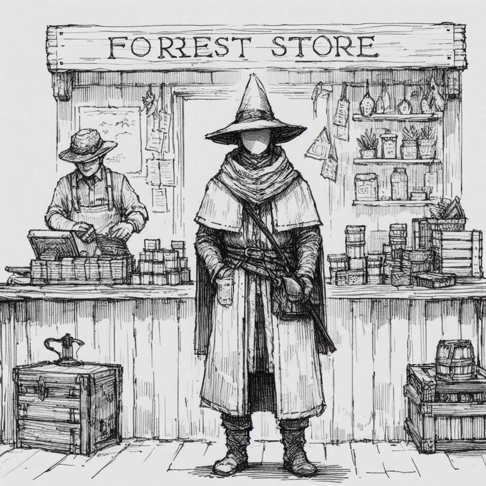
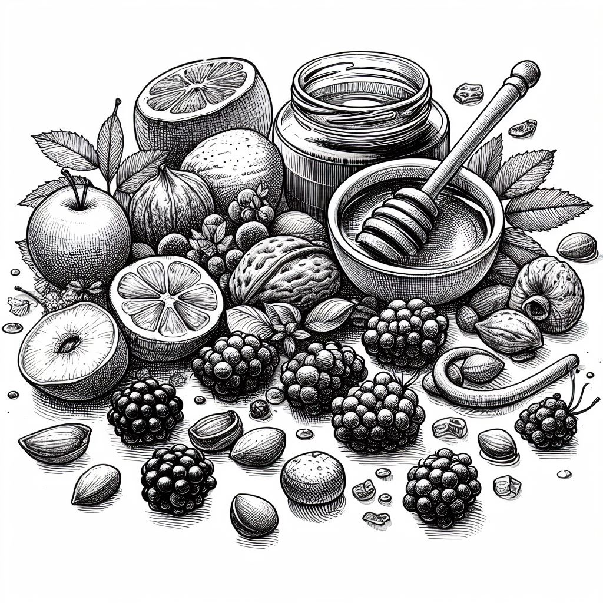

Your browser doesn't support the features required by impress.js, so you are presented with a simplified version of this presentation.
For the best experience please use the latest Chrome, Safari or Firefox browser.
Жили-были в волшебном лесу три лучших друга: доброе дерево по имени Дружок, Болик, Лолик и Зюлик. Они были необычными созданиями: Болик был маленьким медвежонком с пушистой шерстью и веселыми глазками, Лолик — ласковой лисичкой с пушистым хвостиком, а Зюлик — лукавым зайчиком с длинными ушками.
Однажды, когда солнце светило ярко и птички щебетали, трое друзей решили отправиться в магазин, чтобы купить вкусные ягоды и мед для общего празднества. Дружок дерево предложил им свои сочные ягоды и сладкий мед, но друзья настояли на том, чтобы пойти в магазин.
Болик, Лолик и Зюлик вышли из леса и весело направились к магазину. По пути они встретили забавных зверюшек и поделились с ними своими плодами. Маленькие зайчата и лисята были очень рады подаркам и побежали к своим домикам, крича «спасибо!».
Когда трое друзей пришли к закрытому магазину, они заметили торговца, который с печальным видом объявил, что магазин закрыт из-за нехватки продуктов. Друзья посмотрели друг на друга и решили помочь.
Болик, Лолик и Зюлик отправились вместе в лес и собрали все, что только могли: ягоды, орехи, мед и даже немного овощей. Они принесли все это к магазину и предложили торговцу. Увидев такое желание помочь, торговец был весьма приятно удивлен и сказал, что теперь у него есть продукты для продажи.
Благодаря щедрости и дружбе трех товарищей, магазин был открыт снова, а все обитатели леса смогли приобрести необходимые продукты для своих потребностей. Друзья ушли в лес, радуясь, что смогли помочь и принести пользу своему лесу.
Дружба и взаимопомощь принесли пользу не только троим друзьям, но и всем обитателям леса.